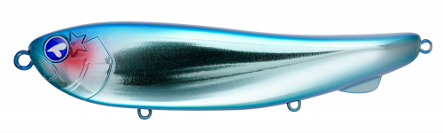
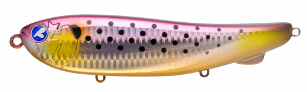
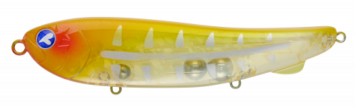
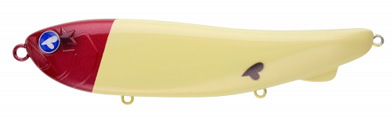

ガチペンライオット155
（GACHIPEN RIOT 155）
ガチペンライオット155（GACHIPEN RIOT 155）はBlueBlue（ブルーブルー）のビッグペンシルベイトです。
ガチペンシリーズから2026年に登場した「進化した新世代のビッグペンシル」。鋭いV字ターンと、真横に逃げるようなスライドアクションで、チェイスだけで終わっていた賢い魚にもスイッチを入れられるのが最大の魅力です。

画像出典:ブルーブルー公式HP
スペック
- メーカー
- BlueBlue（ブルーブルー）
- タイプ
- ビッグペンシルベイト（トップウォーター）
- 全長
- 155mm
- 自重
- 70g
- フック
- #1
- リング
- #4
- カラー
- 全8色
- ターゲット
- シーバス・青物
- 価格
- 4,620円（税込）
- 発売
- 2026年6月27日
▼今すぐチェック
ガチペンライオット155の特徴
V字ターン＋逃げるスライドで、追うだけの魚に口を使わせる新世代ビッグペンシル
-
鋭いV字ターンと驚きのスライド幅
広いボディ側面で水を力強くつかみながらターンするので、これまでのペンシルとは一線を画す鋭いターン角度を実現。アングラーに向かってくるはずのルアーが、まるで真横に逃げるような軌道でスライドし、賢い魚にもスイッチを入れる。
-
後方の小さなフィンで直進性アップ＆ライントラブル激減
ボディ後方に搭載した小さなフィンが、スライドアクションの直進性を高め、今までにない大きなダート幅を生む。アクション時にフックがラインを拾うトラブルも激減するので、スライド系ペンシルの泣きどころだったライントラブルを気にせず使える。
-
スプラッシュとラトル音の圧倒的な存在感
力強いスプラッシュと強烈なラトル音で、広範囲の魚にルアーの存在をアピール。155mm・70gの大きなシルエットと音で、水面まで魚を引きずり出す。
ガチペンライオット155の使い方
基本はロッドアクションとリーリングを組み合わせたドッグウォーク。ロッドを軽くあおりながら巻くと、V字ターンから真横に逃げるようなスライドを繰り返す。公式でも「リーリングアクションで綺麗に動く」とされていて、誰でも簡単に釣れるアクションを出せるのが特徴だ。
魚がチェイスしてきても食わない時は、スライドの幅を活かして大きく横に逃がし、逃げるベイトを演出しましょう。ターンの合間に短いポーズを入れると、食わせの間が作れます。
ガチペンライオット155の得意な状況
水面でベイトが追われている状況や、大きめのベイトにシーバス・青物が付いている状況が最大の出番。
トップで魚が出るのに乗らない、チェイスだけで終わってしまうといった場面や、夏のナイトゲームで水面を意識したシーバスを派手なアピールで引きずり出したい場面で選びたい1本です。
ワンポイント
70gと重いルアーなので、使うロッドのルアーウエイト上限を必ず確認しましょう。ビッグベイト対応のシーバスロッドや、ショアジギング・キャスティング用のロッドが目安です。
公式オンラインショップでは購入数の制限がある人気モデルです（完売後の再入荷は未定）。見つけたら早めに入手しておくのがオススメです。
オススメカラー
ガチペンライオット155は全8色展開。シーバス・青物のトップゲームでオススメのカラーを厳選して紹介します。

#01 ブルーブルーブランドの定番カラー。ブルーの背中とメッキのフラッシングで、晴れた日の青物狙いに。

#07 汽水コノシロ河口・汽水域のコノシロを模したナチュラルカラー。秋のコノシロパターンのシーバスに。

#47 ホットマスタード透け感のあるイエローに赤いヘッドのアピールカラー。濁りやマズメでも目立つ。

#02 ファーストレッドヘッドトップの定番レッドヘッド。白っぽいボディで、夜や薄暗い時間帯でも位置を追いやすい。
画像出典:ブルーブルー公式HP
ガチペンライオット155に似ているルアー
-
 ガチペン130
ブルーブルー
詳細はこちら＞
ガチペン130
ブルーブルー
詳細はこちら＞
同じガチペンシリーズのダイビングペンシル。マイクロベイトパターンなど、派手なアピールより食わせを優先したい時に。
-
 フォースガイル160F
ブルーブルー
詳細はこちら＞
フォースガイル160F
ブルーブルー
詳細はこちら＞
同じブルーブルーのS字系ペンシルベイト。大きなシルエットで水面直下をゆっくり見せたい時の持ち替え先に。
-
 ガボッツ90
ブルーブルー
詳細はこちら＞
ガボッツ90
ブルーブルー
詳細はこちら＞
ポッピングと泳ぎを両立したスイミングポッパー。もう少し小さなシルエットで水面を攻めたい時に。